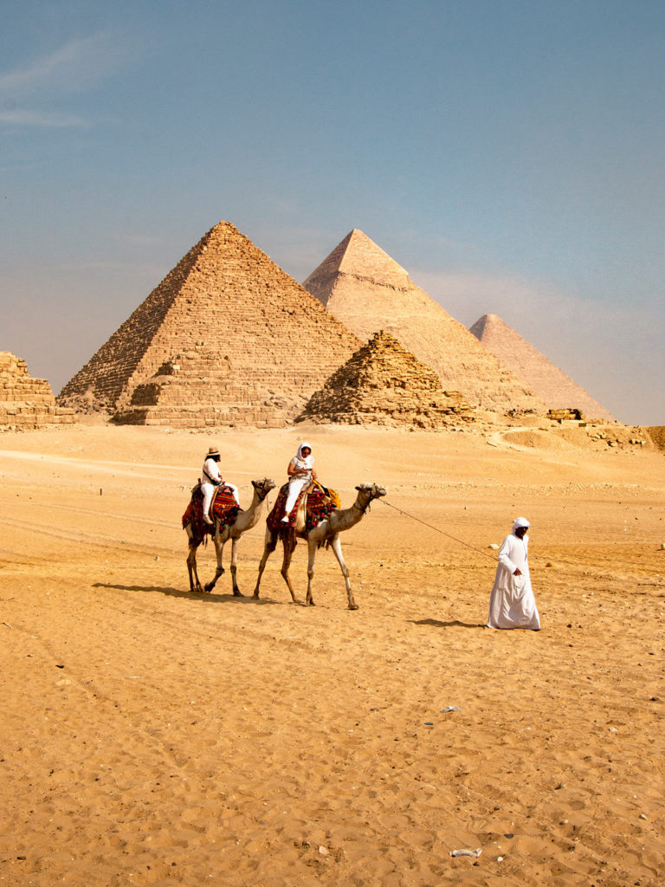

My favorit places to see in egypt
The pyramids
The giza pyramids complex, also called the giza necropolis,is the site on the giza plateau in greater ciaro, Egypt that includes the great pyramides of giza,the pyramides of kharfre,and the pyramides of Menkaure,along with their associated pyramide complex and great sphinx of giza.
khan El khalili
khan El khalili is a famous bazaar and a souq in the historic center of cairo,Egypt. Estamblished as a center of trade in the mamluk era and named for one of it's serval historic caravanserais.